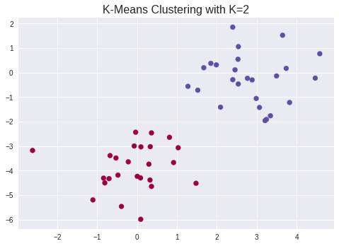

# imports and setup
%matplotlib inline
import numpy as np
import pandas as pd
import matplotlib.pyplot as plt
pd.set_option('precision', 4) # number precision for pandas
pd.set_option('display.max_rows', 12)
pd.set_option('display.max_columns', 12)
pd.set_option('display.float_format', '{:20,.4f}'.format) # get rid of scientific notation
plt.style.use('seaborn') # pretty matplotlib plots
10.5.1 K-Means Clustering¶
np.random.seed(42)
x = np.random.normal(size=50*2).reshape(50, 2)
x[0:25, 0] += 3
x[25:50, 1] -= 4
from sklearn.cluster import KMeans
kmeans = KMeans(n_clusters=2, random_state=42, n_init=20)
kmeans.fit(x)
KMeans(n_clusters=2, n_init=20, random_state=42)
kmeans.labels_
array([1, 1, 1, 1, 1, 1, 1, 1, 1, 1, 1, 1, 1, 1, 1, 1, 1, 1, 1, 1, 1, 1,
1, 1, 1, 0, 0, 0, 0, 0, 0, 0, 0, 0, 0, 0, 0, 0, 0, 0, 0, 0, 0, 0,
0, 0, 0, 0, 0, 0], dtype=int32)
plt.scatter(x[:, 0], x[:, 1], c=kmeans.labels_, cmap='Spectral')
plt.title('K-Means Clustering with K=2', size=16);

kmeans2 = KMeans(n_clusters=3, random_state=42, n_init=20)
kmeans2.fit(x)
KMeans(n_clusters=3, n_init=20, random_state=42)
kmeans2.cluster_centers_
array([[ 2.60450418, 0.24696837],
[-0.09155989, -3.87287837],
[ 3.27858059, -1.37217166]])
kmeans2.labels_
array([0, 0, 0, 0, 0, 0, 2, 0, 0, 2, 2, 2, 0, 0, 0, 0, 2, 2, 2, 0, 0, 0,
0, 0, 2, 1, 1, 1, 1, 1, 1, 1, 1, 1, 1, 1, 1, 1, 1, 1, 1, 1, 1, 1,
1, 1, 1, 1, 1, 1], dtype=int32)
kmeans3 = KMeans(n_clusters=3, random_state=42, n_init=1)
kmeans3.fit(x)
kmeans4 = KMeans(n_clusters=3, random_state=42, n_init=20)
kmeans4.fit(x)
print('inertia with n_init=1:', kmeans3.inertia_)
print('inertia with n_init=20:', kmeans4.inertia_)
inertia with n_init=1: 63.37564083318655
inertia with n_init=20: 62.73737809735573
10.5.2 Hierarchical Clustering¶
from scipy.cluster.hierarchy import linkage, dendrogram
hc_complete = linkage(x, method='complete')
hc_average = linkage(x, method='average')
hc_single = linkage(x, method='single')
f, axes = plt.subplots(1, 3, sharex=False, sharey=False)
f.set_figheight(8)
f.set_figwidth(16)
dendrogram(hc_complete,
labels=x,
leaf_rotation=90,
leaf_font_size=6,
ax=axes[0])
dendrogram(hc_average,
labels=x,
leaf_rotation=90,
leaf_font_size=6,
ax=axes[1])
dendrogram(hc_single,
labels=x,
leaf_rotation=90,
leaf_font_size=6,
ax=axes[2])
axes[0].set_title('Complete Linkage', size=16)
axes[1].set_title('Average Linkage', size=16)
axes[2].set_title('Single Linkage', size=16);
/opt/hostedtoolcache/Python/3.8.12/x64/lib/python3.8/site-packages/matplotlib/text.py:1215: FutureWarning: elementwise comparison failed; returning scalar instead, but in the future will perform elementwise comparison
if s != self._text:
from scipy.cluster.hierarchy import fcluster, cut_tree
cut_tree(hc_complete, 2).ravel()
array([0, 0, 0, 0, 0, 0, 0, 0, 0, 0, 0, 0, 0, 0, 0, 0, 0, 0, 0, 0, 0, 0,
0, 0, 0, 1, 1, 1, 1, 1, 1, 1, 1, 1, 1, 1, 1, 1, 1, 1, 1, 1, 1, 1,
1, 1, 1, 1, 1, 1])
cut_tree(hc_average, 2).ravel()
array([0, 0, 0, 0, 0, 0, 0, 0, 0, 0, 0, 0, 0, 0, 0, 0, 0, 0, 0, 0, 0, 0,
0, 0, 0, 1, 1, 1, 1, 1, 1, 1, 1, 1, 1, 1, 1, 1, 1, 1, 1, 1, 1, 1,
1, 1, 1, 1, 1, 1])
cut_tree(hc_single, 2).ravel()
array([0, 0, 0, 0, 0, 0, 0, 0, 0, 0, 0, 0, 0, 0, 0, 0, 0, 0, 0, 0, 0, 0,
0, 0, 0, 0, 0, 0, 0, 0, 0, 0, 0, 0, 0, 0, 0, 1, 0, 0, 0, 0, 0, 0,
0, 0, 0, 0, 0, 0])
cut_tree(hc_single, 4).ravel()
array([0, 1, 0, 0, 0, 0, 0, 0, 0, 0, 0, 0, 0, 0, 0, 0, 0, 0, 0, 0, 0, 0,
0, 0, 0, 2, 2, 2, 2, 2, 2, 2, 2, 2, 2, 2, 2, 3, 2, 2, 2, 2, 2, 2,
2, 2, 2, 2, 2, 2])
from sklearn.preprocessing import StandardScaler
scaler = StandardScaler()
x_scaled = scaler.fit_transform(x)
dendrogram(linkage(x_scaled, method='complete'),
labels=x_scaled,
leaf_rotation=90,
leaf_font_size=6)
plt.title('Hierarchical Clustering with Scaled Features', size=16);
/opt/hostedtoolcache/Python/3.8.12/x64/lib/python3.8/site-packages/matplotlib/text.py:1215: FutureWarning: elementwise comparison failed; returning scalar instead, but in the future will perform elementwise comparison
if s != self._text:
x = np.random.normal(size=30*3).reshape(30, 3)
# scipy linkage takes care of the distance function pdist
dendrogram(linkage(x, method='complete', metric='correlation'),
labels=x,
leaf_rotation=90,
leaf_font_size=6)
plt.title('Complete Linkage with Correlation Based Distance', size=16);